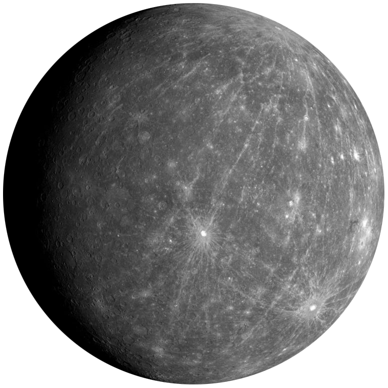
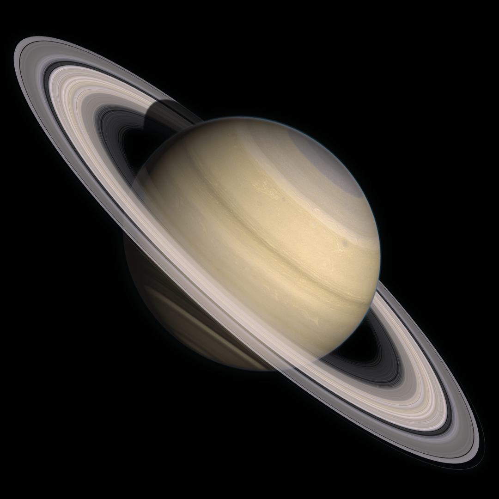

-
Mercúrio
Primeiro planeta em relação ao Sol
1 ano = 87,9 dias terrestres
-
Vênus

Segundo planeta em relação ao Sol
1 ano = 224,7 dias terrestres
-
Terra

Terceiro planeta em relação ao Sol
1 ano = 365 dias terrestres
-
Marte

Quarto planeta em relação ao Sol
1 ano = 687 dias terrestres
-
Júpiter

Quinto planeta em relação ao Sol
1 ano = 11,0 anos terrestres
-
Saturno
Sexto planeta em relação ao Sol
1 ano = 29,5 anos terrestres
-
Urano

Sétimo planeta em relação ao Sol
1 ano = 84,0 anos terrestres
-
Netuno

Oitavo planeta em relação ao Sol
1 ano = 165 anos terrestres